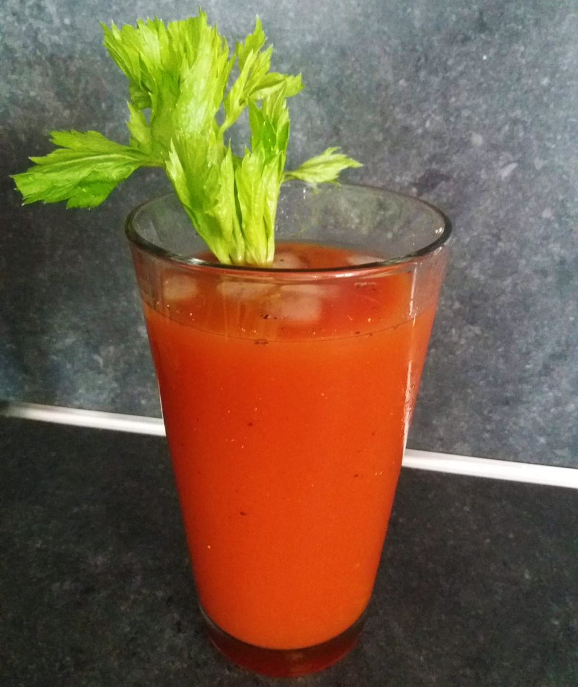

bloody mary cocktail

Bereidingsduur: 5 minuten
Aantal personen: 1
Ingrediënten:
250 milliliter tomatensap
10 eetlepels citroensap
75 milliliter vodka
3 druppels tabasco
naar smaak zwarte peper
20 druppels worcestersaus
1 stengel bleekselderij
ijsblokjes
250 milliliter tomatensap
10 eetlepels citroensap
75 milliliter vodka
3 druppels tabasco
naar smaak zwarte peper
20 druppels worcestersaus
1 stengel bleekselderij
ijsblokjes
Instructies:
1. Neem een longdrink glas en vul deze met ijsblokjes tot de helft. Voeg de wodka, het tomatensap, het citroensap, de tabasco en worcestersaus toe. Roer goed door elkaar heen.
2. Voeg naar smaak zwarte peper toe. Garneer met een stengel selderij als roerstaaf.
1. Neem een longdrink glas en vul deze met ijsblokjes tot de helft. Voeg de wodka, het tomatensap, het citroensap, de tabasco en worcestersaus toe. Roer goed door elkaar heen.
2. Voeg naar smaak zwarte peper toe. Garneer met een stengel selderij als roerstaaf.